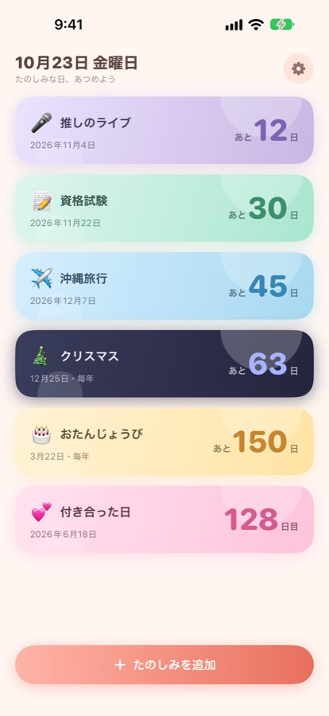
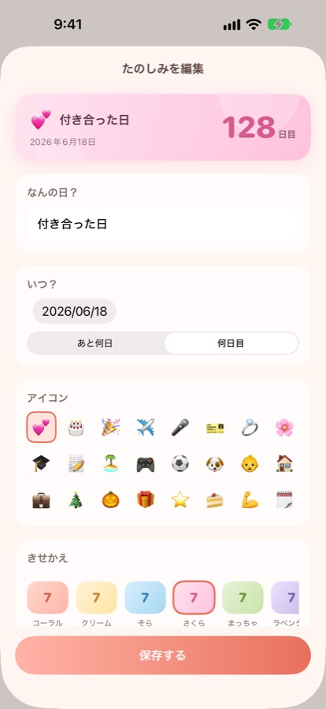
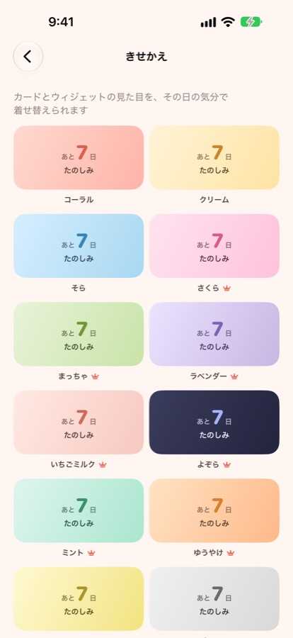
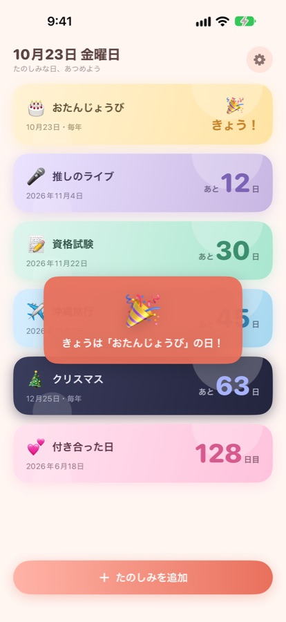
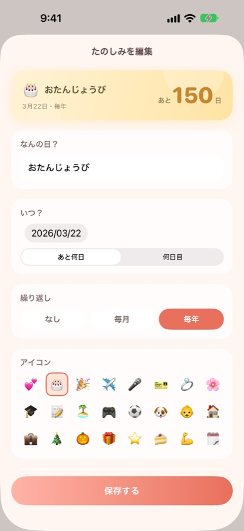

たのしみな日まで、
毎日かぞえる。
Count every day
to the days you love.
推しのライブまであと何日。付き合ってから今日で何日目。誕生日、旅行、結婚式、受験の日も、登録しておけば Himekuri が毎日数えます。日数はホーム画面とロック画面のウィジェットで、アプリを開かなくても目に入ります。
How many days until the concert? How many days since you started dating? Add birthdays, trips, weddings and exams too, and Himekuri counts them every day. The number sits in a widget on your Home Screen and Lock Screen, so you see it without opening the app.
App Store で見るView on the App StoreiPhone 向け。会員登録なしで、無料から使えます。
For iPhone. No sign-up, free to start.
できることWhat it does
あと何日も、何日目もDays until, days since
その日まであと何日かを数えるカウントダウンと、その日から何日目かを数えるカウントアップを、1つずつ選べます。付き合った日は1日目から数えます。
Pick a countdown to a date or a count-up from a date, one by one. The day you started dating counts as day 1.
ロック画面にも日数On your Lock Screen
ホーム画面の小と中、ロック画面の3種類のウィジェットがあります。ウィジェットを長押しすると、表示する日を選べます。
Small and medium Home Screen widgets plus three Lock Screen widgets. Long-press a widget to choose which day it shows.
当日の朝にお知らせA note on the morning
その日の朝9時に通知が届きます。プレミアムなら7日前と前日にも知らせるので、準備が間に合います。
You get a notification at 9 a.m. on the day. With Premium, you also hear about it 7 days before and the day before.
誕生日は毎年数え直すBirthdays that repeat
くり返しを毎年にすると、誕生日が過ぎても次の誕生日までを自動で数え直します。月ごとの記念日には毎月のくり返しを。くり返しはプレミアムで使えます。
Set a birthday to repeat every year and it starts counting to the next one as soon as it passes. Use monthly repeats for monthly anniversaries. Repeats come with Premium.
12色のきせかえ12 colors
コーラル、さくら、よぞら、まっちゃなど12色。カードとウィジェットの色が一緒に変わります。無料で3色、プレミアムで12色ぜんぶ。
Coral, sakura, night sky, matcha and more, 12 in all. The card and the widget change together. 3 are free, all 12 come with Premium.
登録なしで、すぐ使えるNo account needed
会員登録もログインもありません。登録した日はiPhoneの中だけに保存します。
No sign-up and no login. Your days stay on your iPhone.
こんな日を数えていますDays people count
- 💞 付き合った日
- 🎤 推しのライブ
- 🎂 誕生日
- 📝 受験・資格試験
- ✈️ 旅行
- 💍 結婚式・結婚記念日
- 👶 生まれた日
- 🎄 クリスマス
- 💞 The day you started dating
- 🎤 Concerts
- 🎂 Birthdays
- 📝 Exams
- ✈️ Trips
- 💍 Weddings and wedding anniversaries
- 👶 Birthdays of little ones
- 🎄 Christmas
画面Screens





無料とプレミアムFree and Premium
| 機能 | 無料 | プレミアム |
|---|---|---|
| 登録できる日 | 3件 | 無制限 |
| きせかえの色 | 3色 | 12色 |
| 当日の朝のお知らせ | あり | あり |
| 7日前と前日のお知らせ | なし | あり |
| 毎年と毎月のくり返し | なし | あり |
| 広告 | あり | なし |
| Feature | Free | Premium |
|---|---|---|
| Days you can add | 3 | Unlimited |
| Color themes | 3 | 12 |
| Morning-of notification | Yes | Yes |
| 7 days before and the day before | No | Yes |
| Yearly and monthly repeats | No | Yes |
| Ads | Yes | No |
プレミアムは週ごとの自動更新と買い切りの2つから選べます。価格はアプリの中と App Store に出ているものをご覧ください。
Premium comes as a weekly auto-renewing subscription or a one-time purchase. See the app or the App Store for prices.
よくある質問FAQ
付き合った日は何日目として数えますか？
付き合った日そのものを1日目として数えます。次の日が2日目です。
無料で使えますか？
無料で3件まで登録でき、ウィジェットと当日の朝のお知らせも使えます。無料版には広告が出ます。プレミアムにすると、登録が無制限になり、毎年と毎月のくり返し、7日前と前日のお知らせ、全12色のきせかえが使えるようになり、広告も消えます。
誕生日を毎年数え直してくれますか？
くり返しを毎年にすると、誕生日が過ぎたら次の誕生日まであと何日かを自動で数え直します。毎月の記念日には毎月のくり返しが使えます。くり返しはプレミアムの機能です。
ロック画面に日数を出せますか？
出せます。ロック画面の小さなウィジェット3種類と、ホーム画面の小と中のウィジェットがあります。ウィジェットを長押しすると、どの日を表示するかを選べます。
会員登録は必要ですか？
必要ありません。登録した日はiPhoneの中だけに保存し、開発者のサーバーには送りません。
How is the day you started dating counted?
That day itself is day 1. The next day is day 2.
Is it free?
You can add up to 3 days for free, with widgets and the morning-of notification. The free version shows ads. Premium gives you unlimited days, yearly and monthly repeats, notifications 7 days before and the day before, all 12 colors, and no ads.
Does it count to the next birthday every year?
Set the repeat to every year and, once the birthday passes, it starts counting to the next one. Monthly anniversaries can repeat every month. Repeats are a Premium feature.
Can I show the days on my Lock Screen?
Yes. There are three small Lock Screen widgets and small and medium Home Screen widgets. Long-press a widget to choose which day it shows.
Do I need an account?
No. Your days are saved only on your iPhone and never sent to the developer's server.